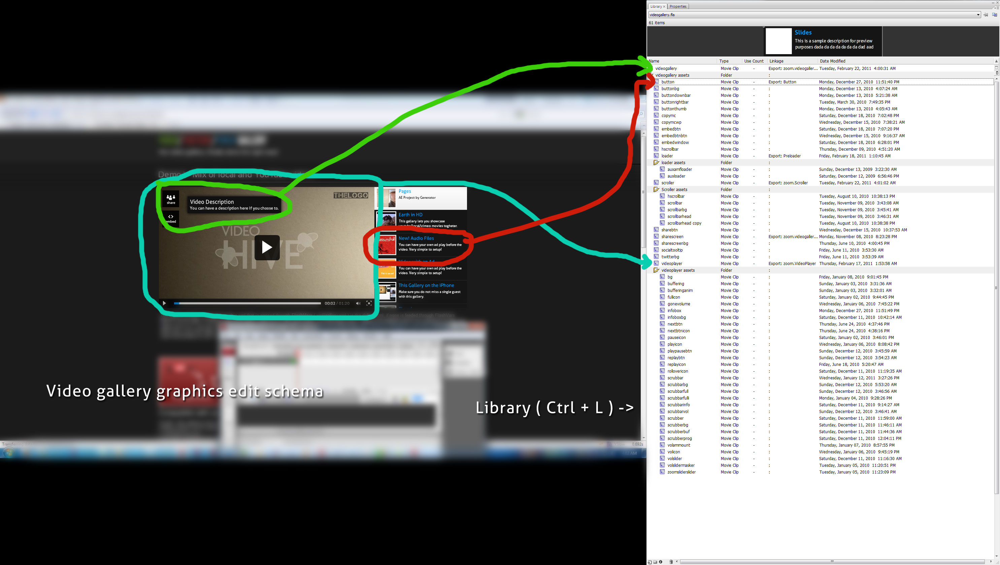

“Video / Youtube / Vimeo Gallery”- Wordpress Plugin
Created: 12/2/2010
By: Digital Zoom Studio
Email: digitalzoomstudio@gmail.com
Support Forum: http://dzs.net/support/
Twitter: http://twitter.com/#!/ZoomItFlash
Facebook: http://facebook.com/dzs
Thank you for purchasing my component. If you have any questions that are beyond the scope of this help file, please feel free to apply for membership on the forum [ link to the left ] and post a thread about your question after your membership is validated.
Table of Contents
A) Intro - top
Intro
The most advanced stock gallery in the world!Please rate after purchase.
Features
- total freedom - customise buttons, activate scrollbar on/off, resize thumbs, everything is at your disposal with this gallery!
- full of choises - set up the gallery just by inputing your YouTube user/playlist in the �feed� tag of the xml file. all descriptions/titles/thumbs/videos will be feeded directly from YouTube so you won�t need to write anything other then that
- hybrid - it can be a video player / example in the preview
- reusable - for flash import: easy guide in the documentation, for html import: just copy/paste a single code, no plugins required
What do you get?
- video gallery WordPress plugin - get creative!
- free updates! - even if the value of this gallery increases with upcoming updates, you will get them for free
- free support! - for installation via my forum -> http://digitalzoomstudio.net/support/ this is the fastest form of support
B) Installation - top
- Just download the zip from your http://activeden.net/user/yourusername/downloads directory in a folder of your choosing.
- Then in your wordpress installation, in the Plugins panel, click Add New like in this picture:

- Then click Upload, and select the zip you have downloaded from CC. Then click Activate.
- All done!
- Access the admin panel from the Settings panel

C) Adding it to your page / post - top
- access / create your post / page
- insert this shortcode
into the post / page
[videogallery id="default"]
- replace default with the id you have set in the admin panel

- All done!
D) Customise It - top
You'll notice some properties in the admin panel for each item.
ID - the id you enter on the shortcode
Width,Height - the size of the gallery (in px)
Menu position - choose the position of the menu
DESCRIPTION
Title - title that appears in the menu
Menu caption - the text underneath the title in the menu
SWF Source - in wp-content/plugins/dzs-videogallery/swfsource
E) FAQ - top
Can you make a screencast to explain the admin panel ?
Sure can, watch below:
How do I add special characters ?
Access the swfsource/videogallery.fla . Open with with Flash CS3 or more. Go to the button movieclip labeled Button - marked red in the big image above ( schema.jpg ) under Customise it section. Then do the embedding of characters as shown here - http://blog.activeden.net/resources/common-questions-by-flashden-buyers/common-questions-using-special-characters-like/ .
F) Credits - top
- jQuery - http://jquery.com/
Digital Zoom Studio